Could hardware ever reach a point of density and efficiency such that all computation happens locally and is P2P only? Or would the demand for compute scale endlessly with its supply?
This month's updates:
Vendor spotlight:
One-pagers:
High bandwidth memory (HBM) is one of the most important components of AI accelerators, enabling the massive amounts of rapid memory transfer needed for AI training workloads, but this performance comes at cost: DRAM - which makes up HBM - is expensive and takes up a lot of area per unit of storage. SanDisk, however, might just have solved this with HBF.
Regular DRAM struggles to saturate the bandwidth demand from AI accelerator compute elements, necessitating the development of technologies like LPDDR/X (low-power DDR/enhanced), GDDR (Graphics DDR), and HBM (High bandwidth memory). While implementation details vary greatly, there is one major common foundation they all share: DRAM. By design, DRAM strikes a balance between power use, density, and cost, leading to it being the best solution for on-device memory that lives just outside the processor but still closer than any larger capacity storage.
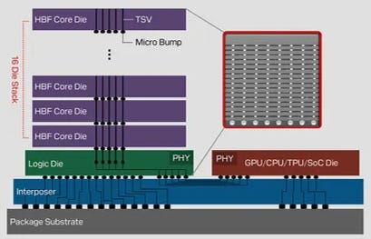
Source: SanDisk
SanDisk, having just completed their spin-off from Western Digital, have announced a possible solution that could combine the large capacities of flash storage memories such as SSDs with the bandwidth that HBM provides to the processor - HBF. At their annual investors' day presentations, SanDisk revealed how they've prototyped a vertical stacking technology (just as HBM does with DRAM) to combine multiple flash memory dies into a single, high-throughput design that can meet the TB/s bandwidth requirements from HBM devices whilst providing the hundreds of GB of capacity enabled by higher density flash memory.
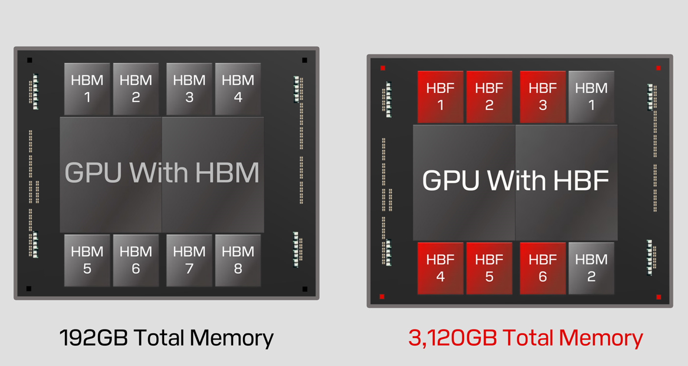
Source: SanDisk
Whilst they admit that latency will still be worse than DRAM-based memory, SanDisk show how AI hardware designers could combine HBF and HBM to have smaller volumes of fast access memory acting as another level of cache, and the higher capacity HBF acting as a higher level of warm storage that can keep data on device - avoiding the 10-100x relative cost of fetching data from the host server. The first generation of HBF is expected in 2H25 providing up to 500GB of capacity per stack, with the second (2026) and third (2027) generations increasing capacity further up to 1TB per stack and attempting to keep up with the bandwidth we can expect from HBM4.
South Korean chip designer Furiosa has gained recognition recently for its innovative and efficient RNGD (pronounced "renegade") tensor-contracting processor, aiming to compete with Nvidia in AI training and inferencing. Now, analysts report that Meta is already in late-stage discussions to acquire the startup and add to its own custom silicon roadmap.
Industry analysts report that the acquisition could be completed as early as by the end of this month, but looking at clues in papers released on the technology Furiosa implement, it's possible that Meta (then Facebook) were collaborating with the startup's technical team as far back as 2019. The buyout would likely lead to Meta mixing their development teams with Furiosa's and incorporating future products into its existing custom silicon lineup, as Meta presently deploys two generations of their "Meta Training and Inference Accelerators" - MTIAs - for their ranking and recommendation systems that run their services on apps such as Facebook and Instagram. From a 2024 leaked internal memo, it appears that Meta already had plans for the next generation of their AI accelerator in 2025. Whether this plan included the merging in of Furiosa's roadmap is unclear.
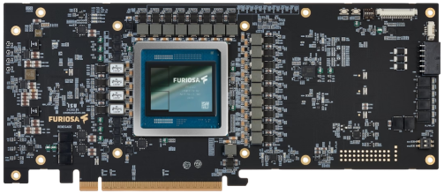
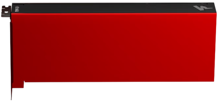
Source: Furiosa
Furiosa released their second processor, the RNGD, in 2024 - a PCIe form factor server chip targeting LLM training and inference providing ~1.6-2x the efficiency of Nvidia H100s on inferencing models in the 6-8B parameter range. The success of their accelerators is down to two key innovations: a tensor contraction compiler (1 2), and a tensor contraction processor. Tensor contraction is a higher dimensional generalisation of matrix multiplication, and the compiler's success comes down to optimising memory layout and caching for better read/write patterns. All of this is then enabled by the unique processor design which performs dot-product operations on variable data shapes. All this results in a CGRA-like architecture designed for variable tensor input sizes, more so than even Google's systolic array based TPUs.
As Nvidia's B200 rack-scale SKUs start coming online on cloud platforms, more leaks and unofficial reports begin to surface on the next two generations of AI GPUs. The B300, successor to the B200 and previously known as the "Blackwell Ultra", and the upcoming architecture named "Rubin" have made headlines for changes to their specs and release dates.
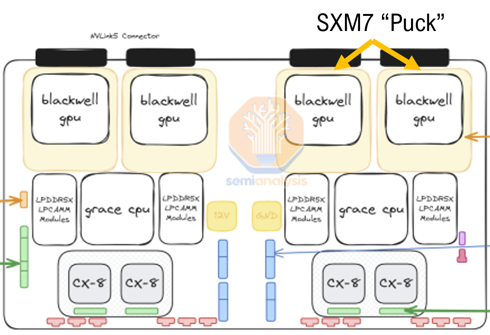
Source: SemiAnalysis
Though rumours circulated as early as 2Q24, it's now been confirmed that Nvidia will reveal the B300 at their annual GTC conference in March. The B300 is reported to launch in 3Q25 for sampling and then go into mass production as early as 4Q25, using 288GB of SK-Hynix's 12hi HMB3E on a TDP of 1200W. For the scale-out networking, the B300 and the Grace CPU-enabled GB300 trays will come with ConnectX-8 NICs capable of 800Gb/s optical connections over a single OSFP or dual-QSFP112 ports. It should be noted that CX8 NICs will be both SpectrumX (Ethernet) and QuantumX (InfiniBand) capable, removing the need for expensive and power-hungry BlueField superNICs where customers required Ethernet E/W networks. Just as SemiAnalysis reported on Christmas day, the G/B300s will still be sold as a rack in the NVL72 form-factor. Finally, Nvidia recognised the logistical bottleneck caused by the SXM baseboard design and evidence confirms that they are switching to a socketed design (1 2) using removable "SXM pucks", enabling other OEMs and integrators aside from Wistron and Foxconn to manufacture and maintain the baseboards.
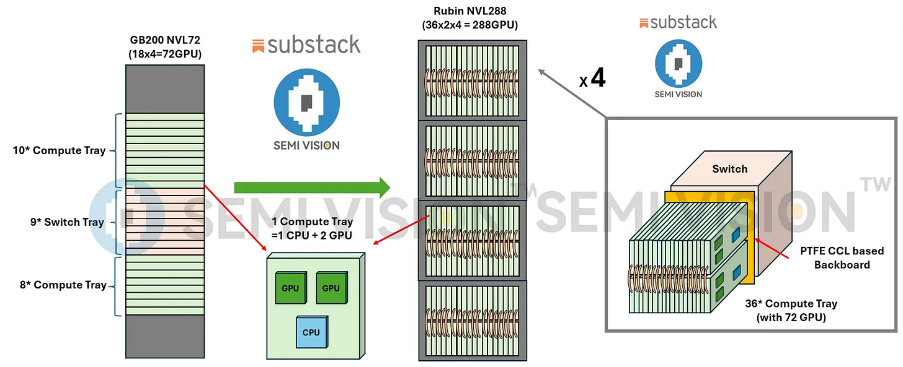
Source: SemiVision
As for Rubin, the next architecture in Nvidia's roadmap after the Blackwell series, sources now state that it may launch for sampling as early as 2H25 because of memory maker SK-Hynix's rapid progress with their sixth-generation HBM4 memory technology which will enable the Rubin series GPUs. How this accelerated release date impacts orders for Nvidia's G/B200 and B300 rack-scale SKUs, and whether a whole generation of networking technology will be skipped is yet unclear. Further, it appears certain now that Nvidia will announce a 4x increase in GPU/rack density with the Rubin NVL288 (1 2), a single, possibly 1 megawatt rack-scale SKU using an orthogonal backplane (fixed socket-like connectors) for power delivery and switching as well as direct-to-chip liquid cooling.
Intel's roadmap on AI accelerators has changed so frequently in recent years that some large customers interested in the Gaudi series decided to stick with vendors able to provide more maintainable and upgradeable product, but recent successes with their 18A process node and PC/server CPUs might finally turn things around.
After recent rumours of possible selloffs of parts of the business to market rivals, it appears Intel is now pinning its future (or at least its independence) on the success of the 18A (1.8nm) process node - Intel Foundry Service's (IFS) "greatest transistor innovation in a decade". Its success relies on two key advancements: the RibbonFET (field effect transistor) and BSPD (back-side power delivery). The new RibbonFET design, based on the same fundamental architecture as arch-rival TSMC's gate-all-around (GAA), brought significant performance gains compared to the "Intel 3" 3nm and now aims to match the capability of TSMC's "N2" 2nm. In addition, BSPD uses the back (or underside) of the silicon wafer for power delivery, leaving the front (or top) for logic. This results in better utilisation of chip area due to not having to mix power and transistor elements on one surface, as well as lower power leakage due to wires being able to be thicker and shorter. For memory, both TSMC and Intel now offer ~38 Mbit/mm^2 of memory density in SRAM - a type of memory which is used almost everywhere on chip, in registers, buffers, caches, and more.
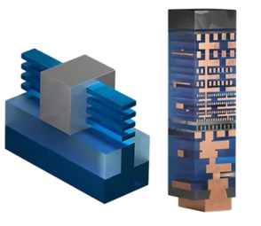
Source: Intel
Despite the technological advancements, it seems that there are still significant challenges ahead until 18A earns Intel some semiconductor manufacturing market share from customers using TSMC and Samsung. Due to release in 2H25, Intel's Panther Lake desktop CPU has been subject to industry leakers who report on both the yield rate of the processor manufacturing process, and the performance of the processors cores. One source states that rate is as low as 20-30%, a number at which mass production would be incredibly difficult if not impossible. There have been no statements yet on whether Panther Lake may be delayed or cancelled, and samples have already been sent out to select customers. Another source claims that the performance of the CPU's "P" or performance cores (optimised for high throughput rather than energy efficiency) is "average", indicating that the numbers from whatever benchmarks were run might not be competitive with other similar products on the market. These leaks appear to have some merit however, as rumours are already circulating hinting at the ~2026 Nova Lake (successor to Panther Lake) using a mixture of Intel's planned 14A process node and TSMC's N2.
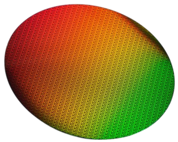
Source: Intel
Chinese semiconductor manufacturer SMIC, once struggling with 7nm, is now likely testing its 5nm process with possible yield rates between 30-70% on Huawei's yet to be announced Ascend 920 or 910D AI GPU. If the improvement on the 910C is large enough, it's possible Huawei may capture a significant share of the Chinese market from Nvidia.
Chinese chip makers appear to be catching up with TSMC/Intel with rumours (1 2 3 4) of SMICs 5nm process node now showing acceptable yield rates of somewhere between ~30-70%. The two U.S. CHIPS acts implemented in 2021 and 2022 prevented Nvidia from selling its AI hardware and ASML from selling chip manufacturing equipment to China, but instead of stalling progress as intended, the legislation may have instead resulted in accelerating the nation's independence in the semiconductor space. Various tech giants are already running workloads on the original 910 and the second generation 910B (the latest publicly available AI GPU from Huawei) with names such as ByteDance, Baidu, and most recently even DeepSeek likely using large clusters of both 910/910B servers for their inferencing workloads. In terms of packaging and integration, Huawei presents their AI GPUs in the typical 8 GPU configuration, with networking topologies within servers being a 2x4 mesh, and between servers being a fat-tree topology, differing significantly from rivals such as Nvidia and AMD.
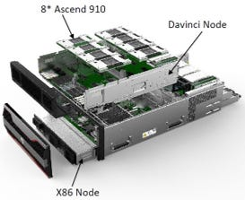
Source: Huawei
The 920 (or 920C, or 910D, to be confirmed), the successor to the still only privately tested 910C, is rumoured to be available to some customers for sampling in 3Q25 and ready for mass production in ~2026. Sources suggest that Huawei will use SMIC's 5nm process for the 920 depending on how it performs in making their Kirin mobile chip. As for the 920's specs, it's impossible to even speculate given that most of the information on the 910C is still unofficial. Leakers and independent analysts suggest various numbers from the 910C having between 96 and 128 GB of HBM, to having either 256 or 512 TFLOPS of FP16 compute, but the reliability of the sources varies greatly. Despite the impressive performance of the 910C, Nvidia's sanction-busting H20 GPUs (the H100, but with less compute and slightly better memory) have seen major orders placed in 1Q25, after the Trump administration hinted at further iterations of the CHIPS act.
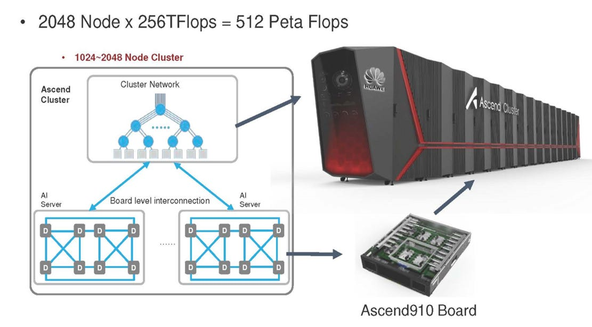
Source: Huawei
Nvidia working with all major memory makers on new "SOCAMM" memory for AI PCs, based on LPDDR5X
Samsung to use Chinese YMTCs technology for 400+ layer NAND flash SSDs
One of the few chip designers aiming at scientific compute, NextSilicon develops "intelligent compute accelerators" (ICAs) that optimise for natively running C++ and Fortran workloads at efficiencies and throughputs/latencies unmatched by CPUs and GPUs. Their "Maverick" ICA now looks to prove itself and break into the datacentre server space.
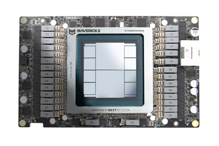
Source: NextSilicon
Founded in 2017, Israeli startup NextSilicon differentiates itself from the competition in two key ways: the target market they pursue, and their requirement to support existing target workloads. Their products aren't aimed at accelerating AI but instead at regular scientific compute workloads that have been - and still are - the biggest consumers of compute in the world. Applications that would benefit from NextSilicon's designs include weather forecasting, finite element analysis, and graph algorithms, all of which rely on structured and repeatable computations on data but with less predictable memory access patterns and more varied control flows. Almost all such applications are written and maintained in two programming languages, C++ and Fortran, both in use for decades for building highly performant programs that run much of the world's software today. NextSilicon aim to keep it that way by ensuring their "software-defined hardware" runs such applications natively, with no need for porting to another language or writing intermediate representations, which is what vendors like Nvidia, AMD, and Intel) require when using their specialised accelerators.
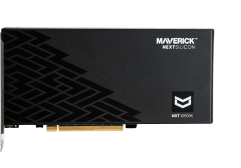
Source: NextSilicon
Their novel processor, the Maverick, now in its second generation, introduces software-defined hardware acceleration by taking scientific applications in their native forms (just as they would run on CPUs) and learning what the software requires from hardware to run optimally. It does this by running them on its own dynamically reconfigurable grid of general purpose "E-cores" and math-specialised "compute elements" and building graphs of the various paths data takes as it moves from memory, through the compute, and back to memory. It then reconfigures itself on the fly to best suit those computational graphs and accelerates application performance by up to 4x when compared to GPUs and 20x compared to high-end CPUs. As for specs, the Maverick 2 in its 300W-TDP PCIe form factor provides up to 32 E-cores and 224 compute elements, along with four stacks of HBM3E, totalling at 96GB. The OAM version supports two compute die and up to 192GB of HBM3E but has a TDP of 600W, requiring liquid cooling. Both forms are built on TSMCs 5nm process.
Device memory is usually stored as electric charge across a capacitor or as a state of a set of transistors, however magnetism provides a new way of complementing or replacing SSDs or DRAM with a low latency/jitter, energy efficient, and non-wearing solution: RTM, which stores information between magnetic domains in nanowires shows promise.
Originally developed by researchers at IBM and now in the experimental stage with various other institutions, RTM aims to combine the high performance and reliability of solid-state memory with the cost-effectiveness and density of traditional magnetic storage. RTM, unlike conventional memory which stores information in transistors and capacitors, uses "racetracks" or nano wires that hold multiple magnetic regions separated by thin domain walls or gaps. These domain walls represent the information to be stored, and information is moved from storage to read/write heads by shifting the magnetic domains up and down the wire using electrical currents.
The shifting action, as well as how quick and efficient it is to read and write information to the wires, leads to the potential for RTM to become part of future memory devices. Additionally, unlike flash storage which requires distinguishing charge levels in a capacitor that wears out over time, racetrack nanowires do not degrade with use. The use case and capabilities of RTM-based memory depends on its structure and the design of the device, just as with flash and DRAM based technologies. Whether the wires are arranged in two- or three-dimensional arrays, how many read/write heads are used to get and store information in parallel, or how error correction is optimised for shift-based memory movement all influence where and how RTM can be used and what advantages/disadvantages it presents.
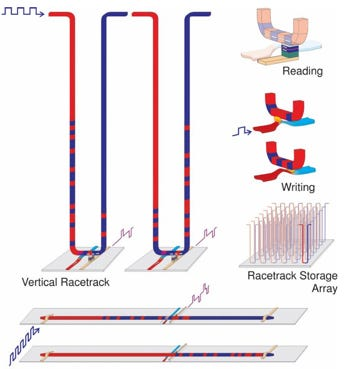
Source: IBM
AI workloads - now the fastest growing use case for high-performance hardware - could potentially see significant improvements in throughput/latency and flops/watt with processors using RTM. With compilers that can breakdown high-dimensional matrix operations (most of what AI models do internally) into instructions suited to reading and writing from arrays of racetracks, hardware that utilises RTM to compliment or replace DRAM-based memory could theoretically lead to large improvements in performance. Currently, IBM appears to be the industry leader in RTM research, and many universities experimenting independently on their own prototypes.
A baseboard (or motherboard) hosts all the components of a server and connects them via copper wires or sockets and cables. The microcontroller which manages much of the state and functionality of the board is known as the baseboard management controller (BMC) and is one of the most important yet often overlooked parts of a server.
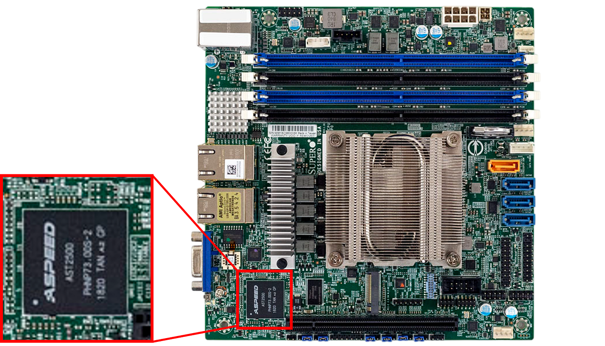
BMCs are dedicated chips on the baseboard that perform a variety of functions crucial to managing a server. Primarily, they enable out-of-band (OOB) management through their own dedicated network interfaces, allowing administrators to remotely power-cycle servers, update BIOS/UEFI firmware, or diagnose failures even when the host operating systems are unresponsive. Modern BMCs are usually built on ARM or RISC-V architectures - even in x86 servers - but operate independently from the CPUs and draw power through their own separate rails. For temperature and power management they interface with thermal sensors, voltage regulators, and fans/other cooling systems, and so can modify power supply/frequency to components to enforce programmable temperature limits. To interact with a BMC directly, most manufacturers provide APIs to expose key functions. The industry standard that has emerged over the past decade is Redfish, which provides ways to interact with the BMC through POST/GET calls, Python, and Ansible to name a few.
As servers tend towards hundreds of cores per CPU, multiple GPUs, and additional NICs/switches all on the same board, the demand on the BMCs increases super-linearly. Individual components become denser and more performant with every iteration, but the number of sensors and the frequency of incoming data also increases, resulting in an even greater load on the management controller and connections. This trend towards increased networking and processing load has resulted in BMCs having a higher core count and using high-bandwidth connectivity such as 400G NICs and PCIe 5.0 to support the data collection and processing required for managing increasingly complex baseboards.
Some BMCs implement advanced predictive maintenance via small AI models, to help prevent damage and wear on components, and incorporate specialised units such as NPUs to offload these small AI workloads. It's also likely that BMCs will eventually integrate more and higher bandwidth memory such as HBM stacks to cache sensor data, enabling better management functionality on chip rather than sending data to remote management servers. This shift mirrors industry's push toward "lights-out" datacentres, where fewer and fewer hardware faults require human intervention.